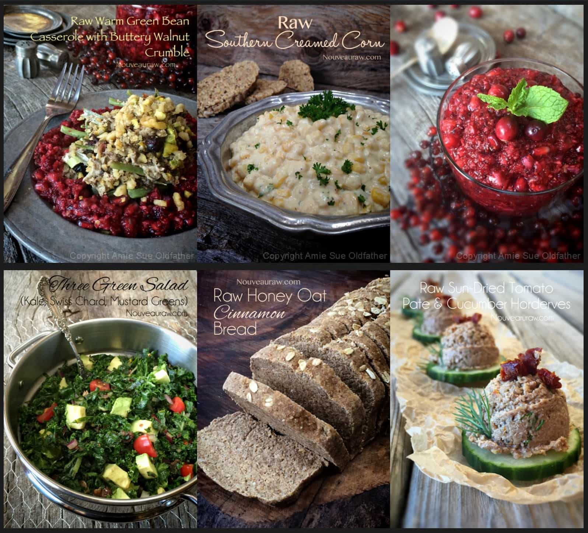

Holiday Menu Ideas

I have been receiving quite a few requests for holiday menu ideas. So I spent the day pulling this post together, hoping that it will inspire you. I thought this task would be quick and easy… but it took me hours. As I was “thumbing” through my recipes here on the site, I realized that I have a LOT of recipes! :)
I do understand that many of these recipes take some time to create… but so does a cooked dinner when made from scratch. Keep in mind… “Fast food is popular because it’s convenient, it’s cheap, and it tastes good. But the real cost of eating fast food never appears on the menu” ~ Eric Schlosser It was hard to narrow it down as much as I did here. I hope you enjoy this post, and please keep me updated down below in the comments so I know what you think. Many blessings, amie sue
Italian Style
For horderves: Spicy Italian Kale Chips, Crisp Rosemary Flatbread Crackers served with Sun-dried Tomato and Basil Cheese Spread as well as a plate of a variety of olives with fresh srigs of thyme or rosemary tucked in amongst them. Main dish: Living Lasagna and/or Caprese Herb and Tomato Tart. Bread: Amazing Italian Bread Sticks. Veggies: Green Salad served with either Almond “Parmesan” or Parme’nut’san Cheese. Dessert: Deep Dish Peach and Cranberry Cobbler
Southern Style
For horderves: Raw Sun-Dried Tomato Pate & Cucumber Canapés. Served in small cups, Veggie Chowder with Pepper Jack Cheese and/or add in a plate of fresh fruit. Main dish: Warm Green Bean Casserole with Buttery Walnut Crumble Side: Cranberry and Pomegranate Relish. Salad: Three Green Salad Veggies: Southern Creamed Corn Bread: Honey Oat Bread Dessert: For a small bite of sweetness, Lemon-Pistachio Wreaths or make a Great Raw Pumpkin Cheesecake.
All American Style
For horderves: “Eggless” Deviled “Eggs”, “Butter” Thin Crackers with American “Cheese” Singles. Main dish: Nutless Veggie Burgers with Sweet & Spicy Mustard and Nightshade-Free Ketchup Or go another route: “Fish” Sandwiches with TarTar Sauce. Side: Caraway and Dill Sauerkraut. Bread: Sourdough Buns. Soup: Sun-Dried Tomato and Corn Chowder Soup (this can be served as an horderve in small shot glasses or as part of the main course. Dessert: Old-Fashioned Apply Pie with Buttery Walnut Crust or Cinnamon Caramel Pear Pie
Christmas Morning Breakfast Buffett
Cereals: Pumpkin Spiced Caramel Cereal, Purely Pumpkin Pie Muesli, create individual jars of Blueberry Coconut Yogurt Yogurt / Porridge-like: Coconut Yogurt (provide small bowls filled with chopped nuts, dried fruits, granola, fresh fruit for toppings) Homemade Apple Sauce, Creamy Oatmeal Porridge. Bread: Pumpkin Cranberry Bread, Country Living Banana Bread, Seed of Life Bread, Autumn Harvest Pumpkin Waffles. Sides: Blueberry Mint Chia Jam, Date Syrup (for waffles and even drizzled over cereals). Platter or bowl of fresh fruit. Drinks: Vegan Eggnog, Pumpkin Patch Smoothie, Cacao Nib Banana Malt Oat Smoothie, Iced Vanilla Coconut Latte
Down Home Traditional
For Horderves: Spinach Dip with Almond Thin Crackers, Vegan Cranberry & Pistachio Gourmet Dessert Cheese, Gingerbread and Hazelnut Fudge Truffles. Main dish: Marinated Mushroom Green Salad (the mushrooms in this salad would serve great as a meat replacement). Side: Cauliflower Mash with Mushroom Gravy, Broccoli Raisin Salad, Sweet Bread and Butter Overnight Pickles. Bread: French Garden Bread. Dessert: Red Velvet Cake or something simple… Walnut Roca Crusted Red Anjou Pears
The Ultimate Veggie Tray
Click (here) to purchase my ebook on how to make these wonderful centerpieces.